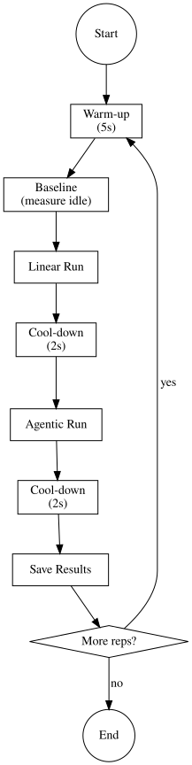

🚀 Step 10: Quick Start - First Experiment¶
Run your first experiment in 5 minutes!
🔄 Experiment Lifecycle¶
Each experiment follows this lifecycle:

✅ Prerequisites Check¶
Before starting, ensure you've completed:
- [x] Hardware detection (
scripts/detect_hardware.py) - [x] Environment detection (
scripts/detect_environment.py) - [x] Database setup (
scripts/setup_fresh_db.py) - [x] Model configuration (API keys in
.env) - [x] LLM verification (
test_llm_setup.py)
⚡ Quick Start Commands¶
1. List Available Tasks¶
python -m core.execution.tests.run_experiment --list-tasks
2. Run a Simple Local Experiment¶
python -m core.execution.tests.run_experiment \
--tasks gsm8k_basic \
--repetitions 1 \
--providers local \
--save-db \
--verbose
3. View Results¶
# Check the database
sqlite3 data/experiments.db "SELECT run_id, workflow_type, dynamic_energy_uj/1e6 as energy_j FROM runs LIMIT 5;"
# Launch the GUI
streamlit run streamlit_app.py
4. Generate a PDF Report¶
- Open browser at
http://localhost:8501 - Navigate to Session Analysis
- Find your experiment
- Click Generate PDF Report
📊 What You'll See¶
Console Output:
📊 Progress: 1/1 runs
Linear: 1.2043 J
Agentic: 2.5945 J
Tax: 2.15x
✅ Pair 1 saved (linear: 1, agentic: 2)
GUI Dashboard: - Energy comparison charts - Orchestration tax analysis - Thermal profiles - Sustainability metrics
🧪 Try Another Task¶
python -m core.execution.tests.run_experiment \
--tasks gsm8k_multi_step \
--repetitions 3 \
--providers local \
--save-db
🔧 Quick Troubleshooting¶
| Issue | Solution |
|---|---|
Permission denied |
sudo ./scripts/fix_permissions.sh |
| No results in DB | Did you use --save-db? |
| Blank GUI | Check streamlit is installed |
| No diagrams | Run python scripts/tools/generate_diagrams.py |
✅ Next Steps¶
Congratulations! You've successfully run your first A-LEMS experiment! 🎉